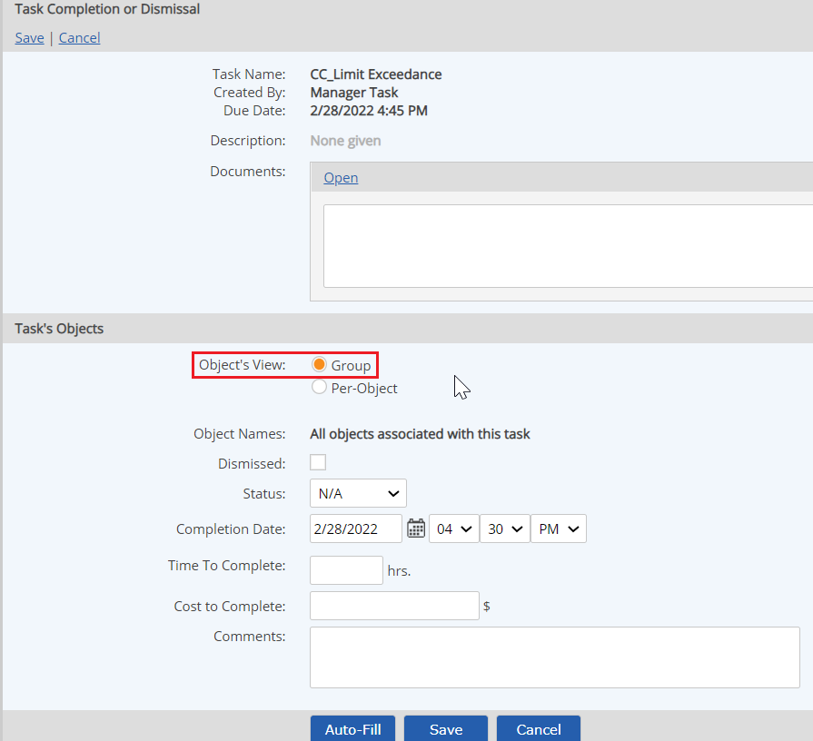
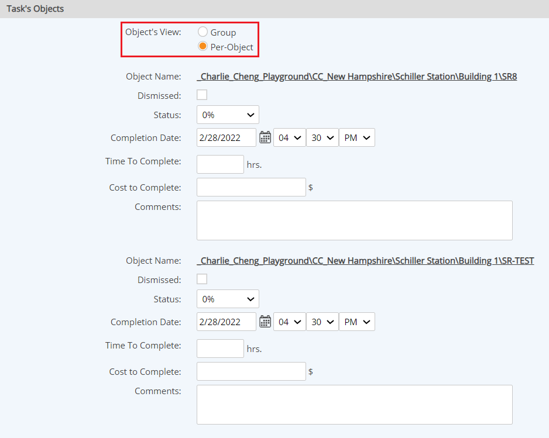

Tasks that are associated with more than one object are multi-object tasks. Multi-object tasks have an occurrence for each object with which the task is associated. You can enter information for all objects at the same time, or you can enter information for each object individually.
To complete a multi-object task:
Open the task completion page by one of the following methods:
On the Task Completion page, choose the view you want to use to complete the task:
Group View: The Group View saves time when the Completion Date, Compliance Start/End Dates, Completion Status, and Comments are identical for each object. One set of task information fields is completed. The task information is then transferred into the relevant fields for each task's object, with Time (hrs) and Cost to Complete ($) being evenly divided among the objects.
For example, if you complete the task information by Group View for a task associated with three objects and task completion takes 6 hours and costs $2100, then completion by Group View results in each task-associated object having 2 hours of time and $700 in costs for task completion.

Per-Object View: In the Per-Object View you can complete the task information for each object separately.
To save time when the information for most objects is identical, with only minor exceptions, enter the information in Group View first, then click Autofill. The group view information is transferred to the fields for each object and the view changes to Per-Object View. You can then edit the information for specific objects as necessary.

If the task is not completed for all objects, the task status for a multi-object task is computed as the average of the status for all objects with which it is associated. Dismissed tasks do not count when computing task status.